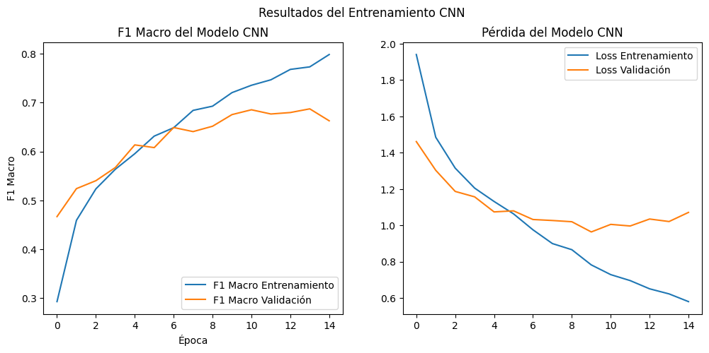
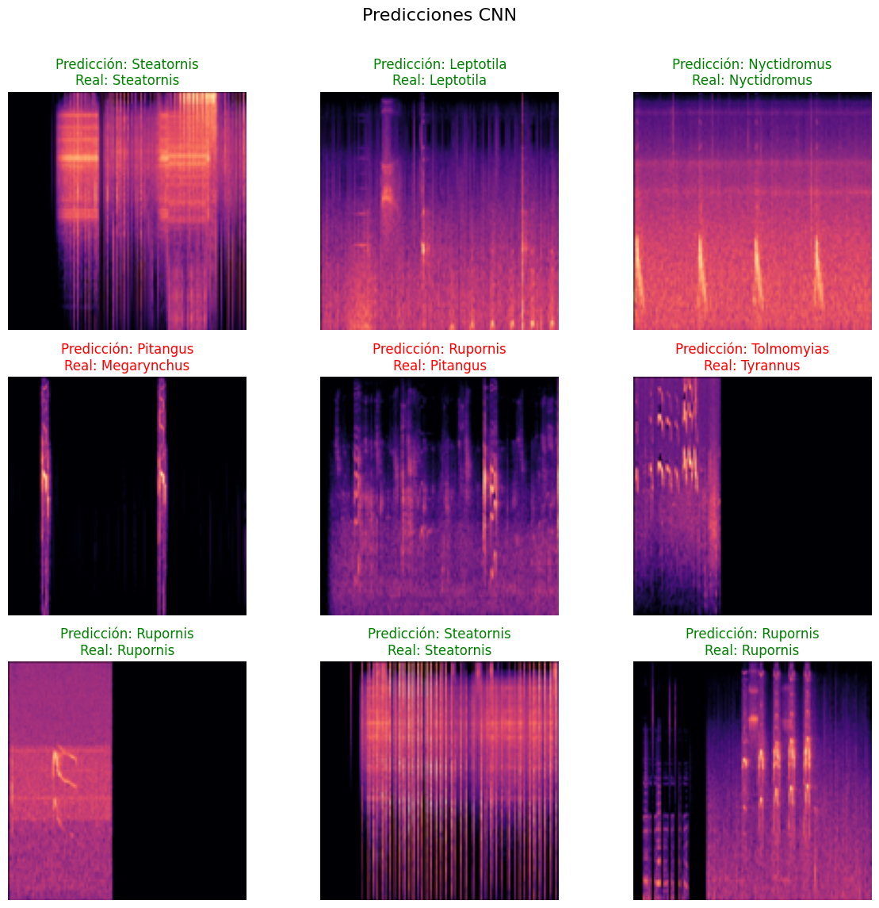
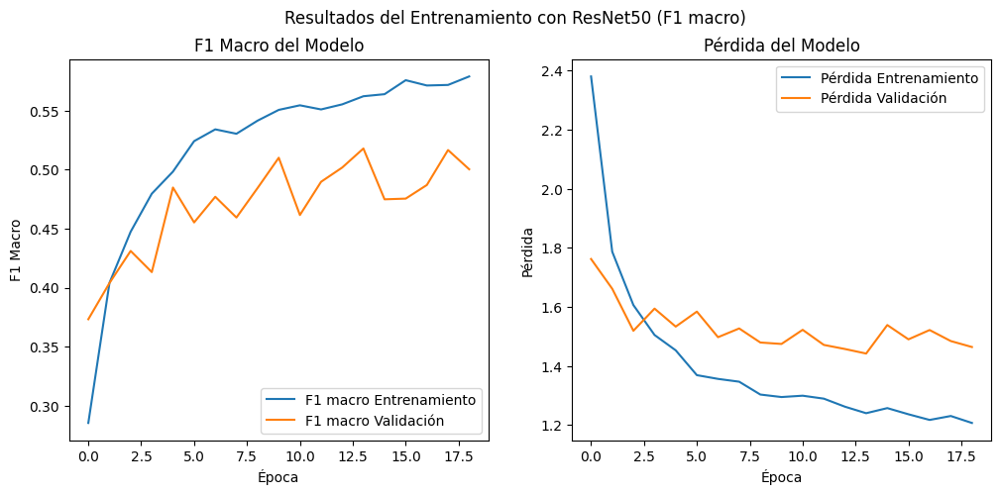
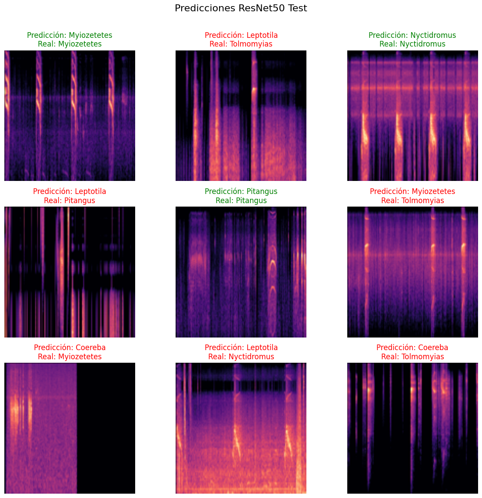
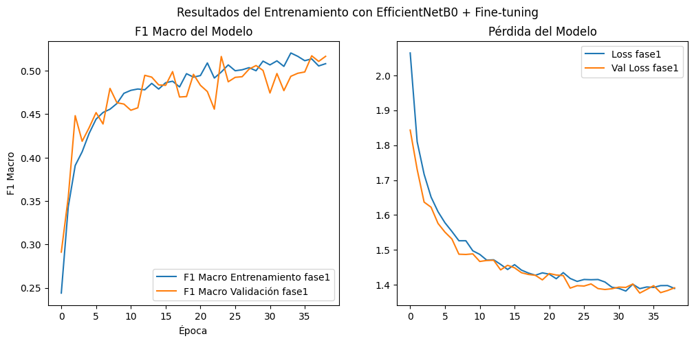
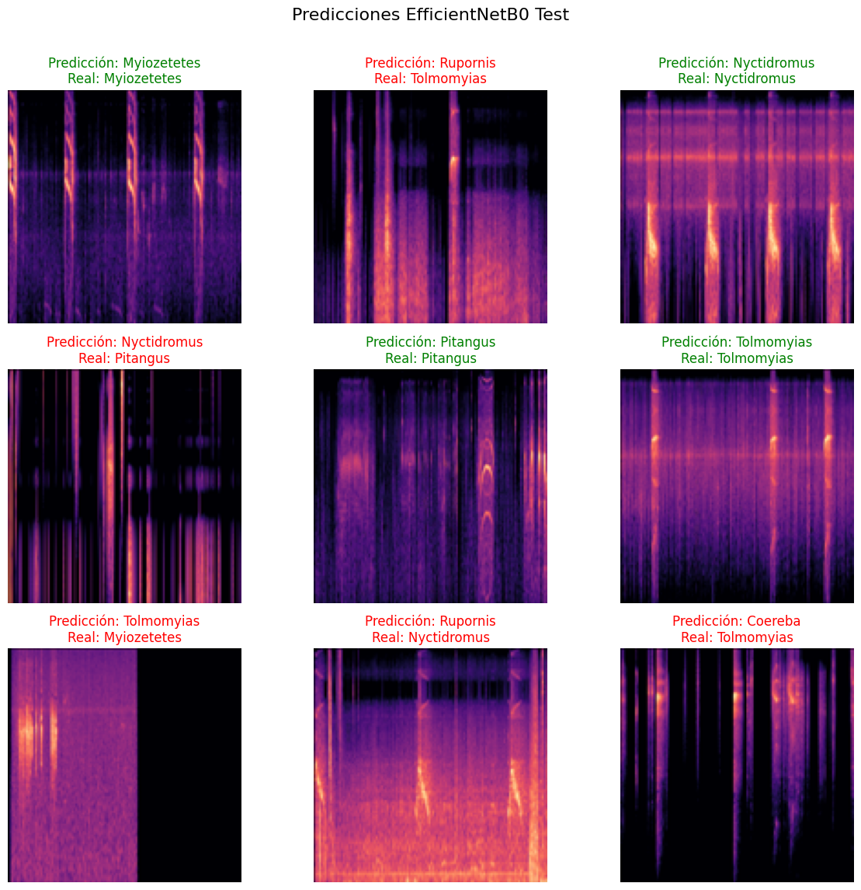

Implementación de modelos#
Librerías y módulos necesarios#
import os
import numpy as np
import tensorflow as tf
from tensorflow.keras import layers, models
from tensorflow.keras.callbacks import EarlyStopping
from sklearn.model_selection import train_test_split
from PIL import Image
import matplotlib.pyplot as plt
from sklearn.metrics import classification_report, roc_auc_score
2025-11-07 12:20:18.290041: I tensorflow/core/util/port.cc:153] oneDNN custom operations are on. You may see slightly different numerical results due to floating-point round-off errors from different computation orders. To turn them off, set the environment variable `TF_ENABLE_ONEDNN_OPTS=0`.
2025-11-07 12:20:18.408537: I tensorflow/core/platform/cpu_feature_guard.cc:210] This TensorFlow binary is optimized to use available CPU instructions in performance-critical operations.
To enable the following instructions: AVX512F AVX512_VNNI AVX512_BF16 AVX_VNNI, in other operations, rebuild TensorFlow with the appropriate compiler flags.
2025-11-07 12:20:19.768281: I tensorflow/core/util/port.cc:153] oneDNN custom operations are on. You may see slightly different numerical results due to floating-point round-off errors from different computation orders. To turn them off, set the environment variable `TF_ENABLE_ONEDNN_OPTS=0`.
Cargue de imágenes#
# --- PARÁMETROS ---
carpeta_espectrogramas = 'espectrogramas_mel_final_TOP10'
IMG_SIZE = 128
MAX_SAMPLES_PER_CLASS = 630
EPOCHS = 50
BATCH_SIZE = 32
X, y = [], []
class_names = sorted({f.split('_')[0] for f in os.listdir(carpeta_espectrogramas) if f.endswith('.png')})
class_to_index = {name: idx for idx, name in enumerate(class_names)}
for f in os.listdir(carpeta_espectrogramas):
if not f.endswith('.png'):
continue
ruta = os.path.join(carpeta_espectrogramas, f)
class_name = f.split('_')[0]
idx = class_to_index[class_name]
try:
img = Image.open(ruta).convert('RGB')
img = img.resize((IMG_SIZE, IMG_SIZE))
X.append(np.array(img))
y.append(idx)
except Exception as e:
print(f"⚠️ No se pudo cargar {f}: {e}")
X = np.array(X, dtype=np.float32)
y = np.array(y, dtype=np.int32)
print(f"Total imágenes cargadas: {len(y)}")
print(f"Clases encontradas: {class_names}")
⚠️ No se pudo cargar Rupornis_magnirostris_iNat577228_segment0.png: cannot identify image file 'espectrogramas_mel_final_TOP10/Rupornis_magnirostris_iNat577228_segment0.png'
⚠️ No se pudo cargar Rupornis_magnirostris_iNat801099_segment0.png: cannot identify image file 'espectrogramas_mel_final_TOP10/Rupornis_magnirostris_iNat801099_segment0.png'
⚠️ No se pudo cargar Rupornis_magnirostris_iNat786932_segment0.png: cannot identify image file 'espectrogramas_mel_final_TOP10/Rupornis_magnirostris_iNat786932_segment0.png'
⚠️ No se pudo cargar Rupornis_magnirostris_iNat358126_segment0.png: cannot identify image file 'espectrogramas_mel_final_TOP10/Rupornis_magnirostris_iNat358126_segment0.png'
⚠️ No se pudo cargar Rupornis_magnirostris_iNat42251_segment0.png: cannot identify image file 'espectrogramas_mel_final_TOP10/Rupornis_magnirostris_iNat42251_segment0.png'
⚠️ No se pudo cargar Rupornis_magnirostris_iNat801129_segment0.png: cannot identify image file 'espectrogramas_mel_final_TOP10/Rupornis_magnirostris_iNat801129_segment0.png'
⚠️ No se pudo cargar Rupornis_magnirostris_iNat69755_segment0.png: cannot identify image file 'espectrogramas_mel_final_TOP10/Rupornis_magnirostris_iNat69755_segment0.png'
⚠️ No se pudo cargar Rupornis_magnirostris_iNat439984_segment0.png: cannot identify image file 'espectrogramas_mel_final_TOP10/Rupornis_magnirostris_iNat439984_segment0.png'
⚠️ No se pudo cargar Rupornis_magnirostris_iNat818920_segment0.png: cannot identify image file 'espectrogramas_mel_final_TOP10/Rupornis_magnirostris_iNat818920_segment0.png'
⚠️ No se pudo cargar Rupornis_magnirostris_iNat358237_segment0.png: cannot identify image file 'espectrogramas_mel_final_TOP10/Rupornis_magnirostris_iNat358237_segment0.png'
⚠️ No se pudo cargar Rupornis_magnirostris_iNat801047_segment0.png: cannot identify image file 'espectrogramas_mel_final_TOP10/Rupornis_magnirostris_iNat801047_segment0.png'
⚠️ No se pudo cargar Rupornis_magnirostris_iNat418255_segment0.png: cannot identify image file 'espectrogramas_mel_final_TOP10/Rupornis_magnirostris_iNat418255_segment0.png'
⚠️ No se pudo cargar Rupornis_magnirostris_iNat56589_segment0.png: cannot identify image file 'espectrogramas_mel_final_TOP10/Rupornis_magnirostris_iNat56589_segment0.png'
⚠️ No se pudo cargar Rupornis_magnirostris_iNat400348_segment0.png: cannot identify image file 'espectrogramas_mel_final_TOP10/Rupornis_magnirostris_iNat400348_segment0.png'
⚠️ No se pudo cargar Rupornis_magnirostris_iNat746717_segment0.png: cannot identify image file 'espectrogramas_mel_final_TOP10/Rupornis_magnirostris_iNat746717_segment0.png'
⚠️ No se pudo cargar Rupornis_magnirostris_iNat397390_segment0.png: cannot identify image file 'espectrogramas_mel_final_TOP10/Rupornis_magnirostris_iNat397390_segment0.png'
⚠️ No se pudo cargar Rupornis_magnirostris_iNat350829_segment0.png: cannot identify image file 'espectrogramas_mel_final_TOP10/Rupornis_magnirostris_iNat350829_segment0.png'
⚠️ No se pudo cargar Rupornis_magnirostris_iNat55243_segment0.png: cannot identify image file 'espectrogramas_mel_final_TOP10/Rupornis_magnirostris_iNat55243_segment0.png'
⚠️ No se pudo cargar Rupornis_magnirostris_iNat801079_segment0.png: cannot identify image file 'espectrogramas_mel_final_TOP10/Rupornis_magnirostris_iNat801079_segment0.png'
⚠️ No se pudo cargar Rupornis_magnirostris_iNat37836_segment0.png: cannot identify image file 'espectrogramas_mel_final_TOP10/Rupornis_magnirostris_iNat37836_segment0.png'
⚠️ No se pudo cargar Rupornis_magnirostris_iNat647891_segment0.png: cannot identify image file 'espectrogramas_mel_final_TOP10/Rupornis_magnirostris_iNat647891_segment0.png'
⚠️ No se pudo cargar Rupornis_magnirostris_iNat799770_segment0.png: cannot identify image file 'espectrogramas_mel_final_TOP10/Rupornis_magnirostris_iNat799770_segment0.png'
⚠️ No se pudo cargar Rupornis_magnirostris_iNat523252_segment0.png: cannot identify image file 'espectrogramas_mel_final_TOP10/Rupornis_magnirostris_iNat523252_segment0.png'
⚠️ No se pudo cargar Rupornis_magnirostris_iNat818594_segment0.png: cannot identify image file 'espectrogramas_mel_final_TOP10/Rupornis_magnirostris_iNat818594_segment0.png'
⚠️ No se pudo cargar Rupornis_magnirostris_iNat564356_segment0.png: cannot identify image file 'espectrogramas_mel_final_TOP10/Rupornis_magnirostris_iNat564356_segment0.png'
⚠️ No se pudo cargar Rupornis_magnirostris_iNat801118_segment0.png: cannot identify image file 'espectrogramas_mel_final_TOP10/Rupornis_magnirostris_iNat801118_segment0.png'
⚠️ No se pudo cargar Rupornis_magnirostris_iNat732722_segment0.png: cannot identify image file 'espectrogramas_mel_final_TOP10/Rupornis_magnirostris_iNat732722_segment0.png'
⚠️ No se pudo cargar Rupornis_magnirostris_iNat442137_segment0.png: cannot identify image file 'espectrogramas_mel_final_TOP10/Rupornis_magnirostris_iNat442137_segment0.png'
⚠️ No se pudo cargar Rupornis_magnirostris_iNat541206_segment0.png: cannot identify image file 'espectrogramas_mel_final_TOP10/Rupornis_magnirostris_iNat541206_segment0.png'
⚠️ No se pudo cargar Rupornis_magnirostris_iNat786920_segment0.png: cannot identify image file 'espectrogramas_mel_final_TOP10/Rupornis_magnirostris_iNat786920_segment0.png'
⚠️ No se pudo cargar Rupornis_magnirostris_iNat801073_segment0.png: cannot identify image file 'espectrogramas_mel_final_TOP10/Rupornis_magnirostris_iNat801073_segment0.png'
⚠️ No se pudo cargar Rupornis_magnirostris_iNat479630_segment0.png: cannot identify image file 'espectrogramas_mel_final_TOP10/Rupornis_magnirostris_iNat479630_segment0.png'
⚠️ No se pudo cargar Rupornis_magnirostris_iNat776843_segment0.png: cannot identify image file 'espectrogramas_mel_final_TOP10/Rupornis_magnirostris_iNat776843_segment0.png'
⚠️ No se pudo cargar Rupornis_magnirostris_iNat64713_segment0.png: cannot identify image file 'espectrogramas_mel_final_TOP10/Rupornis_magnirostris_iNat64713_segment0.png'
⚠️ No se pudo cargar Rupornis_magnirostris_iNat565901_segment0.png: cannot identify image file 'espectrogramas_mel_final_TOP10/Rupornis_magnirostris_iNat565901_segment0.png'
⚠️ No se pudo cargar Rupornis_magnirostris_iNat577229_segment0.png: cannot identify image file 'espectrogramas_mel_final_TOP10/Rupornis_magnirostris_iNat577229_segment0.png'
⚠️ No se pudo cargar Rupornis_magnirostris_iNat799847_segment0.png: cannot identify image file 'espectrogramas_mel_final_TOP10/Rupornis_magnirostris_iNat799847_segment0.png'
⚠️ No se pudo cargar Rupornis_magnirostris_iNat801085_segment0.png: cannot identify image file 'espectrogramas_mel_final_TOP10/Rupornis_magnirostris_iNat801085_segment0.png'
⚠️ No se pudo cargar Rupornis_magnirostris_iNat366490_segment0.png: cannot identify image file 'espectrogramas_mel_final_TOP10/Rupornis_magnirostris_iNat366490_segment0.png'
⚠️ No se pudo cargar Rupornis_magnirostris_iNat391452_segment0.png: cannot identify image file 'espectrogramas_mel_final_TOP10/Rupornis_magnirostris_iNat391452_segment0.png'
⚠️ No se pudo cargar Rupornis_magnirostris_iNat569170_segment0.png: cannot identify image file 'espectrogramas_mel_final_TOP10/Rupornis_magnirostris_iNat569170_segment0.png'
⚠️ No se pudo cargar Rupornis_magnirostris_iNat363909_segment0.png: cannot identify image file 'espectrogramas_mel_final_TOP10/Rupornis_magnirostris_iNat363909_segment0.png'
⚠️ No se pudo cargar Rupornis_magnirostris_iNat586036_segment0.png: cannot identify image file 'espectrogramas_mel_final_TOP10/Rupornis_magnirostris_iNat586036_segment0.png'
⚠️ No se pudo cargar Rupornis_magnirostris_iNat587880_segment0.png: cannot identify image file 'espectrogramas_mel_final_TOP10/Rupornis_magnirostris_iNat587880_segment0.png'
⚠️ No se pudo cargar Rupornis_magnirostris_iNat369624_segment0.png: cannot identify image file 'espectrogramas_mel_final_TOP10/Rupornis_magnirostris_iNat369624_segment0.png'
⚠️ No se pudo cargar Rupornis_magnirostris_iNat757864_segment0.png: cannot identify image file 'espectrogramas_mel_final_TOP10/Rupornis_magnirostris_iNat757864_segment0.png'
⚠️ No se pudo cargar Rupornis_magnirostris_iNat799769_segment0.png: cannot identify image file 'espectrogramas_mel_final_TOP10/Rupornis_magnirostris_iNat799769_segment0.png'
⚠️ No se pudo cargar Rupornis_magnirostris_iNat64521_segment0.png: cannot identify image file 'espectrogramas_mel_final_TOP10/Rupornis_magnirostris_iNat64521_segment0.png'
⚠️ No se pudo cargar Rupornis_magnirostris_iNat389337_segment0.png: cannot identify image file 'espectrogramas_mel_final_TOP10/Rupornis_magnirostris_iNat389337_segment0.png'
⚠️ No se pudo cargar Rupornis_magnirostris_iNat77602_segment0.png: cannot identify image file 'espectrogramas_mel_final_TOP10/Rupornis_magnirostris_iNat77602_segment0.png'
⚠️ No se pudo cargar Rupornis_magnirostris_iNat582200_segment0.png: cannot identify image file 'espectrogramas_mel_final_TOP10/Rupornis_magnirostris_iNat582200_segment0.png'
⚠️ No se pudo cargar Rupornis_magnirostris_iNat717887_segment0.png: cannot identify image file 'espectrogramas_mel_final_TOP10/Rupornis_magnirostris_iNat717887_segment0.png'
⚠️ No se pudo cargar Rupornis_magnirostris_iNat322719_segment0.png: cannot identify image file 'espectrogramas_mel_final_TOP10/Rupornis_magnirostris_iNat322719_segment0.png'
⚠️ No se pudo cargar Rupornis_magnirostris_iNat332494_segment0.png: cannot identify image file 'espectrogramas_mel_final_TOP10/Rupornis_magnirostris_iNat332494_segment0.png'
⚠️ No se pudo cargar Rupornis_magnirostris_iNat586263_segment0.png: cannot identify image file 'espectrogramas_mel_final_TOP10/Rupornis_magnirostris_iNat586263_segment0.png'
⚠️ No se pudo cargar Rupornis_magnirostris_iNat681527_segment0.png: cannot identify image file 'espectrogramas_mel_final_TOP10/Rupornis_magnirostris_iNat681527_segment0.png'
⚠️ No se pudo cargar Rupornis_magnirostris_iNat570819_segment0.png: cannot identify image file 'espectrogramas_mel_final_TOP10/Rupornis_magnirostris_iNat570819_segment0.png'
⚠️ No se pudo cargar Rupornis_magnirostris_iNat433638_segment0.png: cannot identify image file 'espectrogramas_mel_final_TOP10/Rupornis_magnirostris_iNat433638_segment0.png'
⚠️ No se pudo cargar Rupornis_magnirostris_iNat425523_segment0.png: cannot identify image file 'espectrogramas_mel_final_TOP10/Rupornis_magnirostris_iNat425523_segment0.png'
⚠️ No se pudo cargar Rupornis_magnirostris_iNat381134_segment0.png: cannot identify image file 'espectrogramas_mel_final_TOP10/Rupornis_magnirostris_iNat381134_segment0.png'
⚠️ No se pudo cargar Rupornis_magnirostris_iNat558405_segment0.png: cannot identify image file 'espectrogramas_mel_final_TOP10/Rupornis_magnirostris_iNat558405_segment0.png'
⚠️ No se pudo cargar Rupornis_magnirostris_iNat575684_segment0.png: cannot identify image file 'espectrogramas_mel_final_TOP10/Rupornis_magnirostris_iNat575684_segment0.png'
⚠️ No se pudo cargar Rupornis_magnirostris_iNat636243_segment0.png: cannot identify image file 'espectrogramas_mel_final_TOP10/Rupornis_magnirostris_iNat636243_segment0.png'
⚠️ No se pudo cargar Rupornis_magnirostris_iNat581639_segment0.png: cannot identify image file 'espectrogramas_mel_final_TOP10/Rupornis_magnirostris_iNat581639_segment0.png'
⚠️ No se pudo cargar Rupornis_magnirostris_iNat392555_segment0.png: cannot identify image file 'espectrogramas_mel_final_TOP10/Rupornis_magnirostris_iNat392555_segment0.png'
⚠️ No se pudo cargar Rupornis_magnirostris_iNat681526_segment0.png: cannot identify image file 'espectrogramas_mel_final_TOP10/Rupornis_magnirostris_iNat681526_segment0.png'
⚠️ No se pudo cargar Rupornis_magnirostris_iNat64502_segment0.png: cannot identify image file 'espectrogramas_mel_final_TOP10/Rupornis_magnirostris_iNat64502_segment0.png'
⚠️ No se pudo cargar Rupornis_magnirostris_iNat37834_segment0.png: cannot identify image file 'espectrogramas_mel_final_TOP10/Rupornis_magnirostris_iNat37834_segment0.png'
⚠️ No se pudo cargar Rupornis_magnirostris_iNat48437_segment0.png: cannot identify image file 'espectrogramas_mel_final_TOP10/Rupornis_magnirostris_iNat48437_segment0.png'
⚠️ No se pudo cargar Rupornis_magnirostris_iNat801119_segment0.png: cannot identify image file 'espectrogramas_mel_final_TOP10/Rupornis_magnirostris_iNat801119_segment0.png'
⚠️ No se pudo cargar Rupornis_magnirostris_iNat653763_segment0.png: cannot identify image file 'espectrogramas_mel_final_TOP10/Rupornis_magnirostris_iNat653763_segment0.png'
⚠️ No se pudo cargar Rupornis_magnirostris_iNat52591_segment0.png: cannot identify image file 'espectrogramas_mel_final_TOP10/Rupornis_magnirostris_iNat52591_segment0.png'
⚠️ No se pudo cargar Rupornis_magnirostris_iNat340012_segment0.png: cannot identify image file 'espectrogramas_mel_final_TOP10/Rupornis_magnirostris_iNat340012_segment0.png'
⚠️ No se pudo cargar Rupornis_magnirostris_iNat346984_segment0.png: cannot identify image file 'espectrogramas_mel_final_TOP10/Rupornis_magnirostris_iNat346984_segment0.png'
⚠️ No se pudo cargar Rupornis_magnirostris_iNat800403_segment0.png: cannot identify image file 'espectrogramas_mel_final_TOP10/Rupornis_magnirostris_iNat800403_segment0.png'
⚠️ No se pudo cargar Rupornis_magnirostris_iNat605543_segment0.png: cannot identify image file 'espectrogramas_mel_final_TOP10/Rupornis_magnirostris_iNat605543_segment0.png'
⚠️ No se pudo cargar Rupornis_magnirostris_iNat388623_segment0.png: cannot identify image file 'espectrogramas_mel_final_TOP10/Rupornis_magnirostris_iNat388623_segment0.png'
⚠️ No se pudo cargar Rupornis_magnirostris_iNat541178_segment0.png: cannot identify image file 'espectrogramas_mel_final_TOP10/Rupornis_magnirostris_iNat541178_segment0.png'
⚠️ No se pudo cargar Rupornis_magnirostris_iNat358231_segment0.png: cannot identify image file 'espectrogramas_mel_final_TOP10/Rupornis_magnirostris_iNat358231_segment0.png'
⚠️ No se pudo cargar Rupornis_magnirostris_iNat767239_segment0.png: cannot identify image file 'espectrogramas_mel_final_TOP10/Rupornis_magnirostris_iNat767239_segment0.png'
⚠️ No se pudo cargar Rupornis_magnirostris_iNat586116_segment0.png: cannot identify image file 'espectrogramas_mel_final_TOP10/Rupornis_magnirostris_iNat586116_segment0.png'
⚠️ No se pudo cargar Rupornis_magnirostris_iNat358236_segment0.png: cannot identify image file 'espectrogramas_mel_final_TOP10/Rupornis_magnirostris_iNat358236_segment0.png'
⚠️ No se pudo cargar Rupornis_magnirostris_iNat818593_segment0.png: cannot identify image file 'espectrogramas_mel_final_TOP10/Rupornis_magnirostris_iNat818593_segment0.png'
⚠️ No se pudo cargar Rupornis_magnirostris_iNat681505_segment0.png: cannot identify image file 'espectrogramas_mel_final_TOP10/Rupornis_magnirostris_iNat681505_segment0.png'
⚠️ No se pudo cargar Rupornis_magnirostris_iNat730720_segment0.png: cannot identify image file 'espectrogramas_mel_final_TOP10/Rupornis_magnirostris_iNat730720_segment0.png'
⚠️ No se pudo cargar Rupornis_magnirostris_iNat375610_segment0.png: cannot identify image file 'espectrogramas_mel_final_TOP10/Rupornis_magnirostris_iNat375610_segment0.png'
⚠️ No se pudo cargar Rupornis_magnirostris_iNat800390_segment0.png: cannot identify image file 'espectrogramas_mel_final_TOP10/Rupornis_magnirostris_iNat800390_segment0.png'
⚠️ No se pudo cargar Rupornis_magnirostris_iNat506934_segment0.png: cannot identify image file 'espectrogramas_mel_final_TOP10/Rupornis_magnirostris_iNat506934_segment0.png'
⚠️ No se pudo cargar Rupornis_magnirostris_iNat789900_segment0.png: cannot identify image file 'espectrogramas_mel_final_TOP10/Rupornis_magnirostris_iNat789900_segment0.png'
⚠️ No se pudo cargar Rupornis_magnirostris_iNat605518_segment0.png: cannot identify image file 'espectrogramas_mel_final_TOP10/Rupornis_magnirostris_iNat605518_segment0.png'
⚠️ No se pudo cargar Rupornis_magnirostris_iNat376697_segment0.png: cannot identify image file 'espectrogramas_mel_final_TOP10/Rupornis_magnirostris_iNat376697_segment0.png'
⚠️ No se pudo cargar Rupornis_magnirostris_iNat763671_segment0.png: cannot identify image file 'espectrogramas_mel_final_TOP10/Rupornis_magnirostris_iNat763671_segment0.png'
⚠️ No se pudo cargar Rupornis_magnirostris_iNat767240_segment0.png: cannot identify image file 'espectrogramas_mel_final_TOP10/Rupornis_magnirostris_iNat767240_segment0.png'
Total imágenes cargadas: 6755
Clases encontradas: ['Coereba', 'Leptotila', 'Megarynchus', 'Myiozetetes', 'Nyctidromus', 'Pitangus', 'Rupornis', 'Steatornis', 'Tolmomyias', 'Tyrannus']
Funciones necesarias#
# --- SUBSAMPLING POR CLASE ---
def subsample_classes(X, y, max_samples=MAX_SAMPLES_PER_CLASS):
X_new, y_new = [], []
classes = np.unique(y)
for c in classes:
idx = np.where(y == c)[0]
if len(idx) > max_samples:
idx = np.random.choice(idx, max_samples, replace=False)
X_new.append(X[idx])
y_new.append(y[idx])
X_new = np.concatenate(X_new, axis=0)
y_new = np.concatenate(y_new, axis=0)
# Mezclar
p = np.random.permutation(len(y_new))
return X_new[p], y_new[p]
X, y = subsample_classes(X, y, MAX_SAMPLES_PER_CLASS)
print(f"Total después de subsampling: {len(y)}")
Total después de subsampling: 5970
# --- DIVISIÓN EN TRAIN / VALIDACIÓN / TEST ---
X_train_val, X_test, y_train_val, y_test = train_test_split(
X, y, test_size=0.1, stratify=y, random_state=42
)
X_train, X_val, y_train, y_val = train_test_split(
X_train_val, y_train_val, test_size=0.1, stratify=y_train_val, random_state=42
)
print(f"Train: {len(X_train)}, Val: {len(X_val)}, Test: {len(X_test)}")
# --- CREAR DATASETS DE TF ---
train_dataset = tf.data.Dataset.from_tensor_slices((X_train, y_train))
train_dataset = train_dataset.shuffle(buffer_size=1000).batch(BATCH_SIZE).prefetch(tf.data.AUTOTUNE)
validation_dataset = tf.data.Dataset.from_tensor_slices((X_val, y_val)).batch(BATCH_SIZE).prefetch(tf.data.AUTOTUNE)
test_dataset = tf.data.Dataset.from_tensor_slices((X_test, y_test)).batch(BATCH_SIZE).prefetch(tf.data.AUTOTUNE)
Train: 4835, Val: 538, Test: 597
WARNING: All log messages before absl::InitializeLog() is called are written to STDERR
I0000 00:00:1762536036.213441 27219 gpu_device.cc:2019] Created device /job:localhost/replica:0/task:0/device:GPU:0 with 9129 MB memory: -> device: 0, name: NVIDIA GeForce RTX 5070, pci bus id: 0000:01:00.0, compute capability: 12.0
def generar_reporte_clasificacion(model, dataset, class_names, model_name):
"""
Args:
model: El modelo de Keras entrenado que se va a evaluar.
dataset: El dataset de validación o prueba (tf.data.Dataset).
class_names (list): Lista de los nombres de las clases.
model_name (str): Nombre del modelo para los títulos del reporte.
"""
# 1. Obtener predicciones y etiquetas reales de todo el dataset
print(f"Generando predicciones para el modelo: {model_name}...")
y_true = []
y_pred_probs = []
for images, labels in dataset:
batch_pred_probs = model.predict(images, verbose=0)
y_pred_probs.extend(batch_pred_probs)
y_true.extend(labels.numpy())
y_true = np.array(y_true)
y_pred_probs = np.array(y_pred_probs)
y_pred_classes = np.argmax(y_pred_probs, axis=1)
# 2. Generar y mostrar el reporte
print("\n" + "="*50)
print(f" Reporte de Clasificación para el Modelo: {model_name}")
print("="*50)
report = classification_report(y_true, y_pred_classes, target_names=class_names)
print(report)
try:
auc_score = roc_auc_score(y_true, y_pred_probs, multi_class='ovr')
print("\n" + "-"*50)
print(f"AUC Score (One-vs-Rest): {auc_score:.4f}")
print("-"*50)
except ValueError as e:
print(f"\nNo se pudo calcular el AUC Score: {e}")
def visualizar_predicciones(model, dataset, class_names, model_name):
"""
Args:
model: El modelo de Keras entrenado.
dataset: El dataset de validación o prueba (tf.data.Dataset).
class_names (list): Lista de los nombres de las clases.
model_name (str): Título principal para la figura.
"""
print(f"\nMostrando ejemplos de predicciones para: {model_name}...")
plt.figure(figsize=(12, 12))
plt.suptitle(model_name, fontsize=16)
for images, labels in dataset.take(1):
predictions = model.predict(images, verbose=0)
for i in range(9):
ax = plt.subplot(3, 3, i + 1)
plt.imshow(images[i].numpy().astype("uint8"))
predicted_class_index = np.argmax(predictions[i])
predicted_class_name = class_names[predicted_class_index]
true_class_name = class_names[labels[i]]
title_color = "green" if predicted_class_name == true_class_name else "red"
plt.title(f"Predicción: {predicted_class_name}\nReal: {true_class_name}", color=title_color)
plt.axis("off")
plt.tight_layout(rect=[0, 0.03, 1, 0.97])
plt.show()
import tensorflow as tf
class F1Macro(tf.keras.metrics.Metric):
def __init__(self, num_classes, name='f1_macro', **kwargs):
super(F1Macro, self).__init__(name=name, **kwargs)
self.num_classes = num_classes
self.epsilon = 1e-7
# Contadores para true positives, false positives y false negatives
self.tp = self.add_weight(name='tp', shape=(num_classes,), initializer='zeros')
self.fp = self.add_weight(name='fp', shape=(num_classes,), initializer='zeros')
self.fn = self.add_weight(name='fn', shape=(num_classes,), initializer='zeros')
def update_state(self, y_true, y_pred, sample_weight=None):
y_pred_labels = tf.argmax(y_pred, axis=1)
y_true_one_hot = tf.one_hot(tf.cast(y_true, tf.int32), self.num_classes)
y_pred_one_hot = tf.one_hot(y_pred_labels, self.num_classes)
tp = tf.reduce_sum(y_true_one_hot * y_pred_one_hot, axis=0)
fp = tf.reduce_sum((1 - y_true_one_hot) * y_pred_one_hot, axis=0)
fn = tf.reduce_sum(y_true_one_hot * (1 - y_pred_one_hot), axis=0)
self.tp.assign_add(tp)
self.fp.assign_add(fp)
self.fn.assign_add(fn)
def result(self):
precision = self.tp / (self.tp + self.fp + self.epsilon)
recall = self.tp / (self.tp + self.fn + self.epsilon)
f1 = 2 * precision * recall / (precision + recall + self.epsilon)
return tf.reduce_mean(f1) # macro: promedio de todas las clases
def reset_states(self):
for v in self.variables:
v.assign(tf.zeros_like(v))
Modelos#
CNN#
# --- DEFINICIÓN DEL MODELO CNN ---
input_shape = (IMG_SIZE, IMG_SIZE, 3)
num_classes = len(class_names)
data_augmentation = models.Sequential([
layers.RandomRotation(0.02),
layers.RandomZoom(0.05),
layers.GaussianNoise(0.015),
layers.RandomContrast(0.15),
], name="data_augmentation_audio")
cnn_model = models.Sequential([
layers.Input(shape=input_shape),
data_augmentation,
layers.Rescaling(1./255),
layers.Conv2D(32, (3, 3), activation='relu'),
layers.MaxPooling2D((2, 2)),
layers.Conv2D(64, (3, 3), activation='relu'),
layers.MaxPooling2D((2, 2)),
layers.Conv2D(128, (3, 3), activation='relu'),
layers.MaxPooling2D((2, 2)),
layers.Flatten(),
layers.Dense(128, activation='relu'),
layers.Dropout(0.5),
layers.Dense(num_classes, activation='softmax')
])
f1_macro = F1Macro(num_classes=num_classes)
cnn_model.compile(optimizer='adam',
loss='sparse_categorical_crossentropy',
metrics=[f1_macro])
cnn_model.summary()
early_stopping_callback = EarlyStopping(
monitor='val_loss',
patience=5,
restore_best_weights=True,
verbose=1
)
Model: "sequential_2"
┏━━━━━━━━━━━━━━━━━━━━━━━━━━━━━━━━━┳━━━━━━━━━━━━━━━━━━━━━━━━┳━━━━━━━━━━━━━━━┓ ┃ Layer (type) ┃ Output Shape ┃ Param # ┃ ┡━━━━━━━━━━━━━━━━━━━━━━━━━━━━━━━━━╇━━━━━━━━━━━━━━━━━━━━━━━━╇━━━━━━━━━━━━━━━┩ │ data_augmentation_audio │ (None, 128, 128, 3) │ 0 │ │ (Sequential) │ │ │ ├─────────────────────────────────┼────────────────────────┼───────────────┤ │ rescaling_2 (Rescaling) │ (None, 128, 128, 3) │ 0 │ ├─────────────────────────────────┼────────────────────────┼───────────────┤ │ conv2d_6 (Conv2D) │ (None, 126, 126, 32) │ 896 │ ├─────────────────────────────────┼────────────────────────┼───────────────┤ │ max_pooling2d_6 (MaxPooling2D) │ (None, 63, 63, 32) │ 0 │ ├─────────────────────────────────┼────────────────────────┼───────────────┤ │ conv2d_7 (Conv2D) │ (None, 61, 61, 64) │ 18,496 │ ├─────────────────────────────────┼────────────────────────┼───────────────┤ │ max_pooling2d_7 (MaxPooling2D) │ (None, 30, 30, 64) │ 0 │ ├─────────────────────────────────┼────────────────────────┼───────────────┤ │ conv2d_8 (Conv2D) │ (None, 28, 28, 128) │ 73,856 │ ├─────────────────────────────────┼────────────────────────┼───────────────┤ │ max_pooling2d_8 (MaxPooling2D) │ (None, 14, 14, 128) │ 0 │ ├─────────────────────────────────┼────────────────────────┼───────────────┤ │ flatten_2 (Flatten) │ (None, 25088) │ 0 │ ├─────────────────────────────────┼────────────────────────┼───────────────┤ │ dense_4 (Dense) │ (None, 128) │ 3,211,392 │ ├─────────────────────────────────┼────────────────────────┼───────────────┤ │ dropout_2 (Dropout) │ (None, 128) │ 0 │ ├─────────────────────────────────┼────────────────────────┼───────────────┤ │ dense_5 (Dense) │ (None, 10) │ 1,290 │ └─────────────────────────────────┴────────────────────────┴───────────────┘
Total params: 3,305,930 (12.61 MB)
Trainable params: 3,305,930 (12.61 MB)
Non-trainable params: 0 (0.00 B)
# --- ENTRENAMIENTO ---
history_cnn = cnn_model.fit(
train_dataset,
validation_data=validation_dataset,
epochs=EPOCHS,
callbacks=[early_stopping_callback]
)
Epoch 1/50
I0000 00:00:1762536186.167186 27350 cuda_dnn.cc:530] Loaded cuDNN version 90800
152/152 ━━━━━━━━━━━━━━━━━━━━ 5s 17ms/step - f1_macro: 0.2929 - loss: 1.9407 - val_f1_macro: 0.4669 - val_loss: 1.4614
Epoch 2/50
152/152 ━━━━━━━━━━━━━━━━━━━━ 2s 15ms/step - f1_macro: 0.4593 - loss: 1.4852 - val_f1_macro: 0.5241 - val_loss: 1.3032
Epoch 3/50
152/152 ━━━━━━━━━━━━━━━━━━━━ 2s 16ms/step - f1_macro: 0.5236 - loss: 1.3153 - val_f1_macro: 0.5403 - val_loss: 1.1870
Epoch 4/50
152/152 ━━━━━━━━━━━━━━━━━━━━ 2s 15ms/step - f1_macro: 0.5637 - loss: 1.2052 - val_f1_macro: 0.5672 - val_loss: 1.1571
Epoch 5/50
152/152 ━━━━━━━━━━━━━━━━━━━━ 2s 16ms/step - f1_macro: 0.5955 - loss: 1.1316 - val_f1_macro: 0.6136 - val_loss: 1.0742
Epoch 6/50
152/152 ━━━━━━━━━━━━━━━━━━━━ 2s 15ms/step - f1_macro: 0.6315 - loss: 1.0635 - val_f1_macro: 0.6080 - val_loss: 1.0800
Epoch 7/50
152/152 ━━━━━━━━━━━━━━━━━━━━ 2s 15ms/step - f1_macro: 0.6487 - loss: 0.9756 - val_f1_macro: 0.6491 - val_loss: 1.0323
Epoch 8/50
152/152 ━━━━━━━━━━━━━━━━━━━━ 2s 16ms/step - f1_macro: 0.6842 - loss: 0.8998 - val_f1_macro: 0.6407 - val_loss: 1.0269
Epoch 9/50
152/152 ━━━━━━━━━━━━━━━━━━━━ 2s 15ms/step - f1_macro: 0.6927 - loss: 0.8661 - val_f1_macro: 0.6517 - val_loss: 1.0200
Epoch 10/50
152/152 ━━━━━━━━━━━━━━━━━━━━ 2s 16ms/step - f1_macro: 0.7205 - loss: 0.7824 - val_f1_macro: 0.6755 - val_loss: 0.9638
Epoch 11/50
152/152 ━━━━━━━━━━━━━━━━━━━━ 2s 16ms/step - f1_macro: 0.7355 - loss: 0.7288 - val_f1_macro: 0.6854 - val_loss: 1.0055
Epoch 12/50
152/152 ━━━━━━━━━━━━━━━━━━━━ 4s 26ms/step - f1_macro: 0.7467 - loss: 0.6959 - val_f1_macro: 0.6768 - val_loss: 0.9966
Epoch 13/50
152/152 ━━━━━━━━━━━━━━━━━━━━ 2s 16ms/step - f1_macro: 0.7680 - loss: 0.6507 - val_f1_macro: 0.6798 - val_loss: 1.0350
Epoch 14/50
152/152 ━━━━━━━━━━━━━━━━━━━━ 2s 15ms/step - f1_macro: 0.7732 - loss: 0.6228 - val_f1_macro: 0.6873 - val_loss: 1.0211
Epoch 15/50
152/152 ━━━━━━━━━━━━━━━━━━━━ 2s 15ms/step - f1_macro: 0.7984 - loss: 0.5802 - val_f1_macro: 0.6628 - val_loss: 1.0715
Epoch 15: early stopping
Restoring model weights from the end of the best epoch: 10.
# --- VISUALIZACIÓN DE RESULTADOS ---
plt.figure(figsize=(12, 5))
plt.subplot(1, 2, 1)
plt.plot(history_cnn.history['f1_macro'], label='F1 Macro Entrenamiento')
plt.plot(history_cnn.history['val_f1_macro'], label='F1 Macro Validación')
plt.legend(loc='lower right')
plt.title('F1 Macro del Modelo CNN')
plt.xlabel('Época')
plt.ylabel('F1 Macro')
plt.subplot(1, 2, 2)
plt.plot(history_cnn.history['loss'], label='Loss Entrenamiento')
plt.plot(history_cnn.history['val_loss'], label='Loss Validación')
plt.legend(loc='upper right')
plt.title('Pérdida del Modelo CNN')
plt.suptitle('Resultados del Entrenamiento CNN')
plt.show()

# --- EVALUACIÓN EN TEST ---
print("\nEvaluando CNN en el conjunto de test...")
test_results = cnn_model.evaluate(test_dataset)
print(f"F1 Macro en test: {test_results[1]*100:.2f}%")
Evaluando CNN en el conjunto de test...
19/19 ━━━━━━━━━━━━━━━━━━━━ 0s 6ms/step - f1_macro: 0.6639 - loss: 0.9321
F1 Macro en test: 66.39%
# --- VISUALIZACIÓN Y REPORTE ---
visualizar_predicciones(cnn_model, validation_dataset, class_names, "Predicciones CNN")
generar_reporte_clasificacion(cnn_model, validation_dataset, class_names, "CNN Personalizada")
Mostrando ejemplos de predicciones para: Predicciones CNN...
2025-11-07 12:24:35.469575: I tensorflow/core/framework/local_rendezvous.cc:407] Local rendezvous is aborting with status: OUT_OF_RANGE: End of sequence

Generando predicciones para el modelo: CNN Personalizada...
==================================================
Reporte de Clasificación para el Modelo: CNN Personalizada
==================================================
precision recall f1-score support
Coereba 0.88 0.80 0.84 56
Leptotila 0.41 0.55 0.47 53
Megarynchus 0.69 0.53 0.60 47
Myiozetetes 0.49 0.45 0.47 49
Nyctidromus 0.78 0.74 0.76 57
Pitangus 0.55 0.60 0.57 57
Rupornis 0.76 0.67 0.71 57
Steatornis 0.97 1.00 0.98 57
Tolmomyias 0.65 0.67 0.66 48
Tyrannus 0.67 0.72 0.69 57
accuracy 0.68 538
macro avg 0.69 0.67 0.68 538
weighted avg 0.69 0.68 0.68 538
--------------------------------------------------
AUC Score (One-vs-Rest): 0.9386
--------------------------------------------------
2025-11-07 12:24:36.379431: I tensorflow/core/framework/local_rendezvous.cc:407] Local rendezvous is aborting with status: OUT_OF_RANGE: End of sequence
Resnet50#
from tensorflow.keras.applications import ResNet50
# --- DEFINICIÓN DEL MODELO RESNET50 ---
print("\nConstruyendo el modelo con ResNet50...")
input_shape = (IMG_SIZE, IMG_SIZE, 3)
data_augmentation = models.Sequential([
layers.RandomRotation(0.02),
layers.RandomZoom(0.05),
layers.GaussianNoise(stddev=0.015),
layers.RandomContrast(0.15),
], name="data_augmentation_audio")
base_model_rn = ResNet50(include_top=False, weights='imagenet', input_shape=input_shape)
base_model_rn.trainable = False
inputs = layers.Input(shape=input_shape)
x = data_augmentation(inputs)
x = tf.keras.applications.resnet50.preprocess_input(x)
x = base_model_rn(x, training=False)
x = layers.GlobalAveragePooling2D()(x)
x = layers.Dropout(0.3)(x)
outputs = layers.Dense(len(class_names), activation='softmax')(x)
f1_macro = F1Macro(num_classes=10)
model_rn = models.Model(inputs, outputs)
model_rn.compile(optimizer='adam',
loss='sparse_categorical_crossentropy',
metrics=[f1_macro])
model_rn.summary()
early_stopping_callback = EarlyStopping(
monitor='val_loss',
patience=5,
restore_best_weights=True,
verbose=1
)
Construyendo el modelo con ResNet50...
Model: "functional_7"
┏━━━━━━━━━━━━━━━━━━━━━┳━━━━━━━━━━━━━━━━━━━┳━━━━━━━━━━━━┳━━━━━━━━━━━━━━━━━━━┓ ┃ Layer (type) ┃ Output Shape ┃ Param # ┃ Connected to ┃ ┡━━━━━━━━━━━━━━━━━━━━━╇━━━━━━━━━━━━━━━━━━━╇━━━━━━━━━━━━╇━━━━━━━━━━━━━━━━━━━┩ │ input_layer_7 │ (None, 128, 128, │ 0 │ - │ │ (InputLayer) │ 3) │ │ │ ├─────────────────────┼───────────────────┼────────────┼───────────────────┤ │ data_augmentation_… │ (None, 128, 128, │ 0 │ input_layer_7[0]… │ │ (Sequential) │ 3) │ │ │ ├─────────────────────┼───────────────────┼────────────┼───────────────────┤ │ get_item (GetItem) │ (None, 128, 128) │ 0 │ data_augmentatio… │ ├─────────────────────┼───────────────────┼────────────┼───────────────────┤ │ get_item_1 │ (None, 128, 128) │ 0 │ data_augmentatio… │ │ (GetItem) │ │ │ │ ├─────────────────────┼───────────────────┼────────────┼───────────────────┤ │ get_item_2 │ (None, 128, 128) │ 0 │ data_augmentatio… │ │ (GetItem) │ │ │ │ ├─────────────────────┼───────────────────┼────────────┼───────────────────┤ │ stack (Stack) │ (None, 128, 128, │ 0 │ get_item[0][0], │ │ │ 3) │ │ get_item_1[0][0], │ │ │ │ │ get_item_2[0][0] │ ├─────────────────────┼───────────────────┼────────────┼───────────────────┤ │ add (Add) │ (None, 128, 128, │ 0 │ stack[0][0] │ │ │ 3) │ │ │ ├─────────────────────┼───────────────────┼────────────┼───────────────────┤ │ resnet50 │ (None, 4, 4, │ 23,587,712 │ add[0][0] │ │ (Functional) │ 2048) │ │ │ ├─────────────────────┼───────────────────┼────────────┼───────────────────┤ │ global_average_poo… │ (None, 2048) │ 0 │ resnet50[0][0] │ │ (GlobalAveragePool… │ │ │ │ ├─────────────────────┼───────────────────┼────────────┼───────────────────┤ │ dropout_3 (Dropout) │ (None, 2048) │ 0 │ global_average_p… │ ├─────────────────────┼───────────────────┼────────────┼───────────────────┤ │ dense_6 (Dense) │ (None, 10) │ 20,490 │ dropout_3[0][0] │ └─────────────────────┴───────────────────┴────────────┴───────────────────┘
Total params: 23,608,202 (90.06 MB)
Trainable params: 20,490 (80.04 KB)
Non-trainable params: 23,587,712 (89.98 MB)
# --- ENTRENAMIENTO DEL MODELO ---
print("\n--- Iniciando el entrenamiento de ResNet50 ---")
history_rn = model_rn.fit(
train_dataset,
validation_data=validation_dataset,
epochs=EPOCHS,
callbacks=[early_stopping_callback]
)
print("--- Entrenamiento finalizado ---")
--- Iniciando el entrenamiento de ResNet50 ---
Epoch 1/50
152/152 ━━━━━━━━━━━━━━━━━━━━ 8s 35ms/step - f1_macro: 0.2854 - loss: 2.3804 - val_f1_macro: 0.3733 - val_loss: 1.7625
Epoch 2/50
152/152 ━━━━━━━━━━━━━━━━━━━━ 4s 28ms/step - f1_macro: 0.4042 - loss: 1.7871 - val_f1_macro: 0.4040 - val_loss: 1.6617
Epoch 3/50
152/152 ━━━━━━━━━━━━━━━━━━━━ 4s 28ms/step - f1_macro: 0.4475 - loss: 1.6065 - val_f1_macro: 0.4312 - val_loss: 1.5195
Epoch 4/50
152/152 ━━━━━━━━━━━━━━━━━━━━ 4s 27ms/step - f1_macro: 0.4797 - loss: 1.5052 - val_f1_macro: 0.4133 - val_loss: 1.5945
Epoch 5/50
152/152 ━━━━━━━━━━━━━━━━━━━━ 6s 39ms/step - f1_macro: 0.4985 - loss: 1.4533 - val_f1_macro: 0.4850 - val_loss: 1.5336
Epoch 6/50
152/152 ━━━━━━━━━━━━━━━━━━━━ 4s 28ms/step - f1_macro: 0.5243 - loss: 1.3693 - val_f1_macro: 0.4554 - val_loss: 1.5844
Epoch 7/50
152/152 ━━━━━━━━━━━━━━━━━━━━ 4s 27ms/step - f1_macro: 0.5343 - loss: 1.3566 - val_f1_macro: 0.4771 - val_loss: 1.4978
Epoch 8/50
152/152 ━━━━━━━━━━━━━━━━━━━━ 4s 26ms/step - f1_macro: 0.5305 - loss: 1.3471 - val_f1_macro: 0.4595 - val_loss: 1.5273
Epoch 9/50
152/152 ━━━━━━━━━━━━━━━━━━━━ 4s 28ms/step - f1_macro: 0.5416 - loss: 1.3036 - val_f1_macro: 0.4846 - val_loss: 1.4798
Epoch 10/50
152/152 ━━━━━━━━━━━━━━━━━━━━ 4s 27ms/step - f1_macro: 0.5508 - loss: 1.2952 - val_f1_macro: 0.5102 - val_loss: 1.4749
Epoch 11/50
152/152 ━━━━━━━━━━━━━━━━━━━━ 4s 27ms/step - f1_macro: 0.5546 - loss: 1.2997 - val_f1_macro: 0.4616 - val_loss: 1.5227
Epoch 12/50
152/152 ━━━━━━━━━━━━━━━━━━━━ 4s 28ms/step - f1_macro: 0.5511 - loss: 1.2898 - val_f1_macro: 0.4898 - val_loss: 1.4717
Epoch 13/50
152/152 ━━━━━━━━━━━━━━━━━━━━ 6s 40ms/step - f1_macro: 0.5555 - loss: 1.2625 - val_f1_macro: 0.5019 - val_loss: 1.4578
Epoch 14/50
152/152 ━━━━━━━━━━━━━━━━━━━━ 4s 28ms/step - f1_macro: 0.5623 - loss: 1.2405 - val_f1_macro: 0.5180 - val_loss: 1.4425
Epoch 15/50
152/152 ━━━━━━━━━━━━━━━━━━━━ 4s 27ms/step - f1_macro: 0.5641 - loss: 1.2577 - val_f1_macro: 0.4750 - val_loss: 1.5389
Epoch 16/50
152/152 ━━━━━━━━━━━━━━━━━━━━ 4s 27ms/step - f1_macro: 0.5759 - loss: 1.2369 - val_f1_macro: 0.4756 - val_loss: 1.4905
Epoch 17/50
152/152 ━━━━━━━━━━━━━━━━━━━━ 4s 27ms/step - f1_macro: 0.5714 - loss: 1.2177 - val_f1_macro: 0.4871 - val_loss: 1.5220
Epoch 18/50
152/152 ━━━━━━━━━━━━━━━━━━━━ 4s 28ms/step - f1_macro: 0.5719 - loss: 1.2310 - val_f1_macro: 0.5167 - val_loss: 1.4847
Epoch 19/50
152/152 ━━━━━━━━━━━━━━━━━━━━ 4s 28ms/step - f1_macro: 0.5791 - loss: 1.2075 - val_f1_macro: 0.5004 - val_loss: 1.4646
Epoch 19: early stopping
Restoring model weights from the end of the best epoch: 14.
--- Entrenamiento finalizado ---
# --- VISUALIZACIÓN DE RESULTADOS (F1 macro) ---
plt.figure(figsize=(12, 5))
plt.subplot(1, 2, 1)
plt.plot(history_rn.history['f1_macro'], label='F1 macro Entrenamiento')
plt.plot(history_rn.history['val_f1_macro'], label='F1 macro Validación')
plt.legend(loc='lower right')
plt.title('F1 Macro del Modelo')
plt.xlabel('Época')
plt.ylabel('F1 Macro')
plt.subplot(1, 2, 2)
plt.plot(history_rn.history['loss'], label='Pérdida Entrenamiento')
plt.plot(history_rn.history['val_loss'], label='Pérdida Validación')
plt.legend(loc='upper right')
plt.title('Pérdida del Modelo')
plt.xlabel('Época')
plt.ylabel('Pérdida')
plt.suptitle('Resultados del Entrenamiento con ResNet50 (F1 macro)')
plt.show()
print(f"\nF1 macro final en validación (mejor época): {np.max(history_rn.history['val_f1_macro']):.4f}")

F1 macro final en validación (mejor época): 0.5180
# --- Evaluación en el conjunto de test ---
print("\nEvaluando ResNet50 en el conjunto de test...")
test_loss, test_acc = model_rn.evaluate(test_dataset)
print(f"\nPrecisión en test: {test_acc*100:.2f}%")
Evaluando ResNet50 en el conjunto de test...
19/19 ━━━━━━━━━━━━━━━━━━━━ 1s 23ms/step - f1_macro: 0.5569 - loss: 1.2812
Precisión en test: 55.69%
# --- Generar reporte completo en test ---
generar_reporte_clasificacion(model_rn, test_dataset, class_names, "ResNet50 Test")
# --- Visualizar algunas predicciones en test ---
visualizar_predicciones(model_rn, test_dataset, class_names, "Predicciones ResNet50 Test")
Generando predicciones para el modelo: ResNet50 Test...
==================================================
Reporte de Clasificación para el Modelo: ResNet50 Test
==================================================
precision recall f1-score support
Coereba 0.70 0.67 0.68 63
Leptotila 0.35 0.75 0.48 59
Megarynchus 0.62 0.38 0.48 52
Myiozetetes 0.47 0.33 0.39 55
Nyctidromus 0.67 0.56 0.61 63
Pitangus 0.50 0.41 0.45 63
Rupornis 0.60 0.63 0.62 63
Steatornis 0.93 1.00 0.96 63
Tolmomyias 0.47 0.40 0.43 53
Tyrannus 0.49 0.46 0.48 63
accuracy 0.57 597
macro avg 0.58 0.56 0.56 597
weighted avg 0.58 0.57 0.56 597
--------------------------------------------------
AUC Score (One-vs-Rest): 0.8975
--------------------------------------------------
Mostrando ejemplos de predicciones para: Predicciones ResNet50 Test...
2025-11-07 12:27:08.156788: I tensorflow/core/framework/local_rendezvous.cc:407] Local rendezvous is aborting with status: OUT_OF_RANGE: End of sequence

EfficientNetB0#
from tensorflow.keras.applications import EfficientNetB0
# --- DEFINICIÓN DEL MODELO CON TRANSFER LEARNING (EfficientNetB0) ---
print("\nConstruyendo el modelo con EfficientNetB0...")
input_shape = (IMG_SIZE, IMG_SIZE, 3)
data_augmentation = models.Sequential([
layers.RandomRotation(0.02),
layers.RandomZoom(0.05),
layers.GaussianNoise(stddev=0.015),
layers.RandomContrast(0.15),
], name="data_augmentation_audio")
base_model_en = EfficientNetB0(
include_top=False,
weights='imagenet',
input_shape=input_shape
)
base_model_en.trainable = False # fase 1
inputs = layers.Input(shape=input_shape)
x = data_augmentation(inputs)
x = tf.keras.applications.efficientnet.preprocess_input(x)
x = base_model_en(x, training=False)
x = layers.GlobalAveragePooling2D()(x)
x = layers.Dropout(0.3)(x)
outputs = layers.Dense(num_classes, activation='softmax')(x)
model_en = models.Model(inputs, outputs)
Construyendo el modelo con EfficientNetB0...
# --- Compilación fase 1 ---
model_en.compile(
optimizer='adam',
loss='sparse_categorical_crossentropy',
metrics=[F1Macro(num_classes)]
)
early_stopping_callback = EarlyStopping(
monitor='val_loss',
patience=5,
restore_best_weights=True,
verbose=1
)
# --- ENTRENAMIENTO FASE 1 (cabeza congelada) ---
print("\n--- Entrenamiento fase 1 (cabeza congelada) ---")
history_en = model_en.fit(
train_dataset,
validation_data=validation_dataset,
epochs=EPOCHS,
callbacks=[early_stopping_callback]
)
print("--- Fase 1 finalizada ---")
--- Entrenamiento fase 1 (cabeza congelada) ---
Epoch 1/50
152/152 ━━━━━━━━━━━━━━━━━━━━ 7s 25ms/step - f1_macro: 0.2439 - loss: 2.0639 - val_f1_macro: 0.2911 - val_loss: 1.8433
Epoch 2/50
152/152 ━━━━━━━━━━━━━━━━━━━━ 3s 19ms/step - f1_macro: 0.3434 - loss: 1.8099 - val_f1_macro: 0.3542 - val_loss: 1.7306
Epoch 3/50
152/152 ━━━━━━━━━━━━━━━━━━━━ 3s 20ms/step - f1_macro: 0.3909 - loss: 1.7168 - val_f1_macro: 0.4483 - val_loss: 1.6371
Epoch 4/50
152/152 ━━━━━━━━━━━━━━━━━━━━ 3s 20ms/step - f1_macro: 0.4067 - loss: 1.6516 - val_f1_macro: 0.4188 - val_loss: 1.6225
Epoch 5/50
152/152 ━━━━━━━━━━━━━━━━━━━━ 5s 32ms/step - f1_macro: 0.4279 - loss: 1.6096 - val_f1_macro: 0.4344 - val_loss: 1.5760
Epoch 6/50
152/152 ━━━━━━━━━━━━━━━━━━━━ 3s 21ms/step - f1_macro: 0.4443 - loss: 1.5779 - val_f1_macro: 0.4519 - val_loss: 1.5510
Epoch 7/50
152/152 ━━━━━━━━━━━━━━━━━━━━ 3s 21ms/step - f1_macro: 0.4520 - loss: 1.5530 - val_f1_macro: 0.4387 - val_loss: 1.5314
Epoch 8/50
152/152 ━━━━━━━━━━━━━━━━━━━━ 3s 20ms/step - f1_macro: 0.4557 - loss: 1.5265 - val_f1_macro: 0.4798 - val_loss: 1.4879
Epoch 9/50
152/152 ━━━━━━━━━━━━━━━━━━━━ 3s 20ms/step - f1_macro: 0.4624 - loss: 1.5265 - val_f1_macro: 0.4632 - val_loss: 1.4872
Epoch 10/50
152/152 ━━━━━━━━━━━━━━━━━━━━ 3s 19ms/step - f1_macro: 0.4741 - loss: 1.4977 - val_f1_macro: 0.4617 - val_loss: 1.4889
Epoch 11/50
152/152 ━━━━━━━━━━━━━━━━━━━━ 3s 19ms/step - f1_macro: 0.4775 - loss: 1.4875 - val_f1_macro: 0.4546 - val_loss: 1.4672
Epoch 12/50
152/152 ━━━━━━━━━━━━━━━━━━━━ 3s 18ms/step - f1_macro: 0.4790 - loss: 1.4711 - val_f1_macro: 0.4574 - val_loss: 1.4701
Epoch 13/50
152/152 ━━━━━━━━━━━━━━━━━━━━ 3s 19ms/step - f1_macro: 0.4781 - loss: 1.4719 - val_f1_macro: 0.4948 - val_loss: 1.4706
Epoch 14/50
152/152 ━━━━━━━━━━━━━━━━━━━━ 3s 20ms/step - f1_macro: 0.4855 - loss: 1.4588 - val_f1_macro: 0.4927 - val_loss: 1.4431
Epoch 15/50
152/152 ━━━━━━━━━━━━━━━━━━━━ 3s 19ms/step - f1_macro: 0.4790 - loss: 1.4442 - val_f1_macro: 0.4838 - val_loss: 1.4562
Epoch 16/50
152/152 ━━━━━━━━━━━━━━━━━━━━ 5s 31ms/step - f1_macro: 0.4863 - loss: 1.4581 - val_f1_macro: 0.4833 - val_loss: 1.4490
Epoch 17/50
152/152 ━━━━━━━━━━━━━━━━━━━━ 3s 21ms/step - f1_macro: 0.4880 - loss: 1.4424 - val_f1_macro: 0.4991 - val_loss: 1.4349
Epoch 18/50
152/152 ━━━━━━━━━━━━━━━━━━━━ 3s 20ms/step - f1_macro: 0.4814 - loss: 1.4340 - val_f1_macro: 0.4698 - val_loss: 1.4300
Epoch 19/50
152/152 ━━━━━━━━━━━━━━━━━━━━ 3s 19ms/step - f1_macro: 0.4967 - loss: 1.4278 - val_f1_macro: 0.4703 - val_loss: 1.4276
Epoch 20/50
152/152 ━━━━━━━━━━━━━━━━━━━━ 3s 19ms/step - f1_macro: 0.4927 - loss: 1.4346 - val_f1_macro: 0.4960 - val_loss: 1.4145
Epoch 21/50
152/152 ━━━━━━━━━━━━━━━━━━━━ 3s 19ms/step - f1_macro: 0.4945 - loss: 1.4307 - val_f1_macro: 0.4833 - val_loss: 1.4327
Epoch 22/50
152/152 ━━━━━━━━━━━━━━━━━━━━ 3s 19ms/step - f1_macro: 0.5091 - loss: 1.4177 - val_f1_macro: 0.4761 - val_loss: 1.4284
Epoch 23/50
152/152 ━━━━━━━━━━━━━━━━━━━━ 3s 19ms/step - f1_macro: 0.4917 - loss: 1.4352 - val_f1_macro: 0.4558 - val_loss: 1.4268
Epoch 24/50
152/152 ━━━━━━━━━━━━━━━━━━━━ 3s 19ms/step - f1_macro: 0.4986 - loss: 1.4186 - val_f1_macro: 0.5165 - val_loss: 1.3909
Epoch 25/50
152/152 ━━━━━━━━━━━━━━━━━━━━ 3s 19ms/step - f1_macro: 0.5068 - loss: 1.4101 - val_f1_macro: 0.4874 - val_loss: 1.3979
Epoch 26/50
152/152 ━━━━━━━━━━━━━━━━━━━━ 3s 19ms/step - f1_macro: 0.5001 - loss: 1.4156 - val_f1_macro: 0.4925 - val_loss: 1.3969
Epoch 27/50
152/152 ━━━━━━━━━━━━━━━━━━━━ 5s 31ms/step - f1_macro: 0.5012 - loss: 1.4149 - val_f1_macro: 0.4932 - val_loss: 1.4029
Epoch 28/50
152/152 ━━━━━━━━━━━━━━━━━━━━ 3s 21ms/step - f1_macro: 0.5036 - loss: 1.4155 - val_f1_macro: 0.5020 - val_loss: 1.3896
Epoch 29/50
152/152 ━━━━━━━━━━━━━━━━━━━━ 3s 20ms/step - f1_macro: 0.5001 - loss: 1.4083 - val_f1_macro: 0.5061 - val_loss: 1.3869
Epoch 30/50
152/152 ━━━━━━━━━━━━━━━━━━━━ 3s 19ms/step - f1_macro: 0.5112 - loss: 1.3934 - val_f1_macro: 0.5005 - val_loss: 1.3891
Epoch 31/50
152/152 ━━━━━━━━━━━━━━━━━━━━ 3s 19ms/step - f1_macro: 0.5068 - loss: 1.3901 - val_f1_macro: 0.4744 - val_loss: 1.3938
Epoch 32/50
152/152 ━━━━━━━━━━━━━━━━━━━━ 3s 19ms/step - f1_macro: 0.5115 - loss: 1.3825 - val_f1_macro: 0.4969 - val_loss: 1.3930
Epoch 33/50
152/152 ━━━━━━━━━━━━━━━━━━━━ 3s 19ms/step - f1_macro: 0.5051 - loss: 1.4021 - val_f1_macro: 0.4772 - val_loss: 1.4027
Epoch 34/50
152/152 ━━━━━━━━━━━━━━━━━━━━ 3s 19ms/step - f1_macro: 0.5206 - loss: 1.3894 - val_f1_macro: 0.4937 - val_loss: 1.3767
Epoch 35/50
152/152 ━━━━━━━━━━━━━━━━━━━━ 3s 19ms/step - f1_macro: 0.5167 - loss: 1.3941 - val_f1_macro: 0.4972 - val_loss: 1.3871
Epoch 36/50
152/152 ━━━━━━━━━━━━━━━━━━━━ 3s 20ms/step - f1_macro: 0.5117 - loss: 1.3930 - val_f1_macro: 0.4987 - val_loss: 1.3979
Epoch 37/50
152/152 ━━━━━━━━━━━━━━━━━━━━ 3s 20ms/step - f1_macro: 0.5138 - loss: 1.3981 - val_f1_macro: 0.5173 - val_loss: 1.3779
Epoch 38/50
152/152 ━━━━━━━━━━━━━━━━━━━━ 5s 30ms/step - f1_macro: 0.5056 - loss: 1.3983 - val_f1_macro: 0.5108 - val_loss: 1.3840
Epoch 39/50
152/152 ━━━━━━━━━━━━━━━━━━━━ 3s 20ms/step - f1_macro: 0.5082 - loss: 1.3899 - val_f1_macro: 0.5167 - val_loss: 1.3918
Epoch 39: early stopping
Restoring model weights from the end of the best epoch: 34.
--- Fase 1 finalizada ---
# --- VISUALIZACIÓN DE RESULTADOS ---
plt.figure(figsize=(12, 5))
plt.subplot(1, 2, 1)
plt.plot(history_en.history['f1_macro'], label='F1 Macro Entrenamiento fase1')
plt.plot(history_en.history['val_f1_macro'], label='F1 Macro Validación fase1')
plt.legend(loc='lower right')
plt.title('F1 Macro del Modelo')
plt.xlabel('Época')
plt.ylabel('F1 Macro')
plt.subplot(1, 2, 2)
plt.plot(history_en.history['loss'], label='Loss fase1')
plt.plot(history_en.history['val_loss'], label='Val Loss fase1')
plt.legend(loc='upper right')
plt.title('Pérdida del Modelo')
plt.suptitle('Resultados del Entrenamiento con EfficientNetB0 + Fine-tuning')
plt.show()

# --- EVALUACIÓN EN TEST ---
print("\nEvaluando EfficientNetB0 en el conjunto de test...")
test_results = model_en.evaluate(test_dataset)
print(f"F1 Macro en test: {test_results[1]*100:.2f}%")
# --- PREDICCIONES Y REPORTE ---
visualizar_predicciones(model_en, test_dataset, class_names, "Predicciones EfficientNetB0 Test")
generar_reporte_clasificacion(model_en, test_dataset, class_names, "EfficientNetB0 Test")
Evaluando EfficientNetB0 en el conjunto de test...
19/19 ━━━━━━━━━━━━━━━━━━━━ 0s 15ms/step - f1_macro: 0.5233 - loss: 1.3607
F1 Macro en test: 52.33%
Mostrando ejemplos de predicciones para: Predicciones EfficientNetB0 Test...

Generando predicciones para el modelo: EfficientNetB0 Test...
==================================================
Reporte de Clasificación para el Modelo: EfficientNetB0 Test
==================================================
precision recall f1-score support
Coereba 0.56 0.60 0.58 63
Leptotila 0.43 0.63 0.51 59
Megarynchus 0.54 0.27 0.36 52
Myiozetetes 0.50 0.31 0.38 55
Nyctidromus 0.63 0.62 0.62 63
Pitangus 0.43 0.35 0.39 63
Rupornis 0.50 0.63 0.56 63
Steatornis 0.94 0.98 0.96 63
Tolmomyias 0.41 0.38 0.39 53
Tyrannus 0.45 0.52 0.48 63
accuracy 0.54 597
macro avg 0.54 0.53 0.52 597
weighted avg 0.54 0.54 0.53 597
--------------------------------------------------
AUC Score (One-vs-Rest): 0.8792
--------------------------------------------------
Comparación de Modelos Benchmark y Conclusiones#
Se evaluaron tres modelos benchmark para la clasificación de espectrogramas de aves: CNN Personalizada, ResNet50 y EfficientNetB0. Los resultados permiten establecer un punto de referencia antes de implementar optimizaciones avanzadas.
Modelo |
F1 Macro (%) |
Accuracy (%) |
AUC (One-vs-Rest) |
|---|---|---|---|
CNN Personalizada |
68 |
68 |
93.86 |
ResNet50 |
56 |
57 |
89.75 |
EfficientNetB0 |
52 |
54 |
87.92 |
Observaciones#
La CNN Personalizada obtuvo el mejor desempeño global, equilibrando precisión y recall en la mayoría de las clases.
Los modelos preentrenados (ResNet50 y EfficientNetB0) no superaron a la CNN en este dataset, probablemente por el tamaño limitado de los datos y la diferencia entre imágenes de ImageNet y espectrogramas de audio.
La diferencia entre accuracy y F1 macro muestra que algunas clases minoritarias tienen menor representación, confirmando que el F1 macro es la métrica más relevante para este benchmark.
Conclusión#
Estos modelos sirven como referencia inicial (benchmark) para la tarea de clasificación de espectrogramas.
La CNN Personalizada se perfila como la mejor opción de partida.
Futuras mejoras podrían explorarse mediante fine-tuning de modelos preentrenados, aumento de datos específico para audio y estrategias de balance de clases, usando siempre el F1 macro como métrica guía.